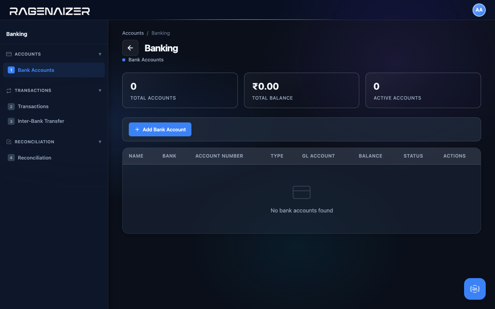
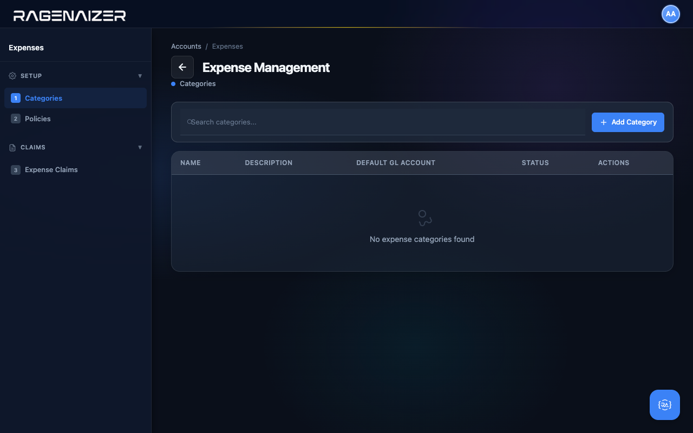
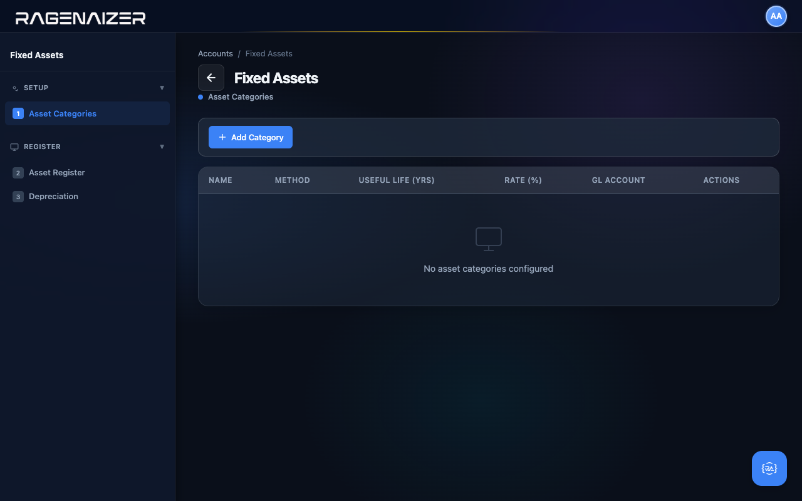
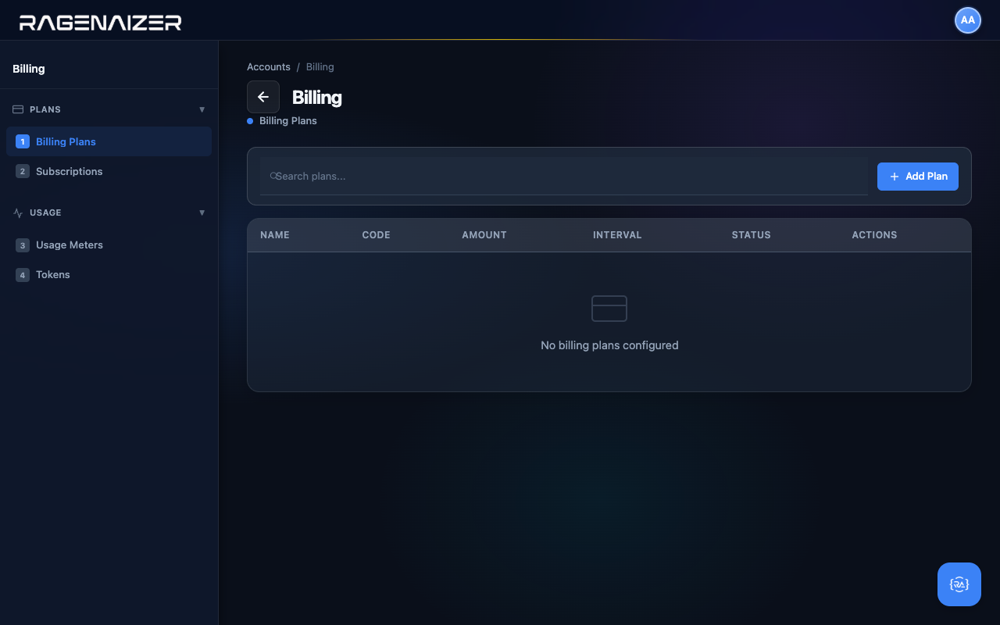

Welcome.
Let's start by being honest about what this guide is and what it isn't.
Who this guide is for
This guide is for the person a new customer just delegated their accounting setup to. You probably don't have a finance background. You might be a junior software developer, an operations coordinator, a founder's first hire, or simply the only person in the room who isn't afraid of forms with twenty fields. That's enough.
We assume you can use a web browser, you can fill in a form, and you can ask for help when something looks wrong. Everything else — chart of accounts, general ledger, fiscal year, trial balance — we'll teach you as it comes up. There's a glossary at the end with every term defined in plain language.
What you'll have at the end
By the time you finish this guide, you will have:
- A working Chart of Accounts (the master list of every category your business will record money against)
- An active fiscal year with twelve monthly periods
- Tax configurations set up for GST
- At least one customer and one vendor on file
- Your first customer invoice, posted to the General Ledger
- Your first vendor bill, posted to the General Ledger
- One recorded customer payment applied to that invoice
- A clean Trial Balance where every debit equals every credit — the universal sign of a healthy ledger
And, just as importantly, you'll understand what each of those things is and why it matters. No magic. No "ask the accountant." Just plain mechanics.
Five-minute vocabulary primer
Here are six words you'll see constantly. Skim them now — the rest of the guide will revisit each one with examples. Don't try to memorise.
Account
A bucket. Every bit of money your business touches lands in some bucket: "Cash on Hand", "Bank — HDFC Current", "Sales Revenue", "Office Rent". The complete list of buckets is the Chart of Accounts.
Debit & Credit
The two sides of every transaction. They are not "good" and "bad" — they are just left and right. Every entry in the system has a debit side and a credit side, and they always equal each other. That's the entire trick of double-entry accounting.
General Ledger (GL)
The master diary. Every transaction gets a dated entry in the General Ledger with its debit and credit lines. The balance of any account at any moment is just the sum of all its GL entries.
Fiscal Year
A twelve-month accounting calendar. In India this usually runs 1 April → 31 March. In the US it usually matches the calendar year. Reports are organised by fiscal year, and at the end of each year you "close the books" and start fresh.
Customer Invoice / Vendor Bill
An invoice is a bill you send to your customer — "you owe us ₹10,000". A vendor bill is a bill you receive from your supplier — "you owe us ₹5,000". Both eventually become General Ledger entries that move money in and out of accounts.
Trial Balance
A one-page summary that lists every account with its current balance, debits on one side and credits on the other. If both sides total to the same number, your books are in balance. If they don't, something is broken. You'll generate one of these in Section 13.
The 30,000-ft view.
Before we touch a single screen, here's the whole shape of what we're about to do.
What is double-entry accounting?
Double-entry is a 600-year-old idea that every transaction has two sides. If money moves in, it had to come from somewhere. If money moves out, it had to go somewhere. You record both sides, every time, and the totals always match.
Imagine you sell a customer a ₹10,000 service. The customer hasn't paid yet, so two things just happened:
- Sales Revenue went up by ₹10,000 (you earned it)
- Accounts Receivable went up by ₹10,000 (the customer owes you)
Both are true at once. The system records both. Later, when the customer actually pays you, two more things happen:
- Bank Account goes up by ₹10,000
- Accounts Receivable goes down by ₹10,000 (they don't owe you anymore)
Net effect across both events: Sales Revenue is up ₹10,000, the bank balance is up ₹10,000, AR is back to zero. Every account moved by the right amount, automatically. That's the magic of double-entry — you can't lose track of money because the math doesn't let you.
You don't have to do this math yourself
Ragenaizer Accounts is built to generate the General Ledger entries automatically whenever you create an invoice, post a payment, or close a period. You will rarely write a manual journal entry. Your job is to set up the rules — this guide is about those setup steps.
The setup roadmap
Here's the full sequence we'll follow. Each step depends on the ones before it — you can't skip ahead.
Logging in & the dashboard.
Before you do anything, get familiar with where things live. This is your home base.
Logging in
Open the Ragenaizer login page in a fresh browser tab and sign in with the credentials your administrator gave you. If you don't have credentials yet, ask. We won't cover password setup here — that's a separate guide.

Where you land: the Accounts dashboard
After you log in, you'll see the home screen with one tile per Ragenaizer module. Click Accounts. You'll land on the Accounts Dashboard — a single screen that summarises everything in your books and gives you one-click shortcuts to the twelve main areas of the application.
On a clean install (like the one we're using for this guide) the dashboard is mostly empty. That's expected. Every screenshot in this section is taken on day one with zero data. The "after" you'll see will be the same screen once you've followed along.

The KPI tiles — what each number means
Across the top of the dashboard you'll see six tiles. Each one is a real-time count or sum derived from the General Ledger. On a clean install they all read zero or a dash — here's what they will mean once you have data.
- Total GL Entries — how many journal entries (of any kind) live in the General Ledger. Includes drafts, posted, and reversed.
- Posted Entries — the subset that have been finalised. Posted entries actually move account balances.
- Draft Entries — entries someone has started but not yet posted. These do not affect any balance.
- Total Debit (Posted) — the sum of every debit line across all posted entries.
- Total Credit (Posted) — the sum of every credit line. This must equal Total Debit, always. If it doesn't, your books aren't balanced and you should investigate immediately.
- Net Balance — equals Total Debit minus Total Credit. Should always be zero on a healthy ledger.

If Total Debit ≠ Total Credit, stop everything
It means somewhere in your General Ledger an entry was posted with mismatched lines. The system is supposed to make
that impossible — if you ever see it happen, raise it with your administrator. Healthy books always have a Net Balance of 0.
Quick Actions — every button explained
Below the KPIs is a grid of twelve cards, one for each major area of the Accounts application. They're not just navigation links — they're a mental map of the whole product. Here's what each one does, in the order you'll encounter them in this guide.
Accounts Setup
setup.htmlThe configuration hub for everything foundational: account types, account groups, the Chart of Accounts, opening balances, fiscal years, periods, journal types, and country templates. You'll spend most of Sections 4–7 of this guide here.
Walkthrough →Vendors & Customers
parties.htmlThe unified directory of every party your business deals with — both the people who pay you (customers) and the people you pay (vendors). One screen, two tabs.
Walkthrough →Vendor Bills
payables.htmlEverything on the money-going-out side: bills you've received from suppliers, the payments you've made against them, and the AP aging report.
Walkthrough →Customer Invoices
receivables.htmlThe money-coming-in side: invoices you've issued to customers, the payments you've received, credit notes, and the AR aging report.
Walkthrough →General Ledger
ledger.htmlThe master diary — every journal entry the system has ever recorded, browsable, filterable, and reversible. After you post your first invoice you'll come here to see what the system did behind the scenes.
Walkthrough →Banking
banking.htmlBank account master data, inter-account transfers, and bank reconciliation — the process of matching what your bank statement says against what your General Ledger says.
Overview →Financial Reports
reports.htmlEvery report finance teams care about: Trial Balance, Profit & Loss, Balance Sheet, Cash Flow, account ledgers, AR aging, AP aging. Everything is generated live from the General Ledger.
Walkthrough →Expense Management
expenses.htmlEmployee expense claims — categories, policies, submission, approval, and reimbursement. Each approved claim becomes a vendor bill in the GL.
Overview →Fixed Assets
assets.htmlLong-lived things you bought — vehicles, computers, machinery. Tracks the original cost, the depreciation schedule, and disposal. The system posts depreciation entries to the GL automatically.
Overview →Taxation
taxation.htmlTax codes, rates, HSN/SAC product classification, and the GSTR-1 / GSTR-3B reports for filing. We'll seed the standard India GST rates in Section 6.
Walkthrough →Billing
billing.htmlSubscription billing — recurring plans, customer subscriptions, usage meters, automated billing cycles. If you charge customers monthly, this is where you set it up.
Overview →Administration
admin.htmlThe audit trail, setup checklists, year-end closing, and entity-level history. You'll mostly come here when something looks wrong and you need to find out who changed what.
Walkthrough →Recent activity feed
In the middle of the dashboard there's a "Recent GL Entries" table. On a clean install it's empty — come back to it after Section 10 and you'll see your first invoice posting appear in real time.

Chart of Accounts.
The complete list of every category your business will record money against. Build it once, then everything else — invoices, bills, reports — reads from it.
Chart of Accounts (CoA)
The complete list of every "bucket" your business records transactions against. Cash, Sales Revenue, Office Rent, Salaries, Bank Loans, etc. Each bucket has a code (a number) and a name. Together they form a hierarchy: Account Type → Account Group → Account.
Where to find Accounts Setup
From the Accounts dashboard, click the Accounts Setup Quick Action card (or open setup.html directly).
You'll land on a page with a left sidebar of nine numbered tabs grouped under three headings:
Chart of Accounts (1–5), Fiscal (6–7), Journals (8) and Templates (9).
We'll work through them in numerical order — the order is meaningful, each step builds on the one before.

Tab 1 — Account Types
The first tab lists the five fundamental categories every accounting system uses. They are Assets, Liabilities, Equity, Revenue, and Expenses. They're seeded automatically the first time you open the page — you don't need to create them. Each row also tells you the account type's normal balance side (debit or credit) and its display order in the Chart of Accounts.

Normal Balance
The side — debit or credit — on which an account naturally increases. Assets and Expenses increase on the debit side. Liabilities, Equity, and Revenue increase on the credit side. This is why bookkeeping students drill the rule "DEAD CLER" — Debits go to Expenses, Assets, Draws; Credits go to Liabilities, Equity, Revenue.
Tab 2 — Account Groups
Account Groups are sub-categories within an account type. For example, the Assets type has groups like "Current Assets", "Fixed Assets", "Investments", and "Other Assets". You don't have to use groups, but they make the Chart of Accounts much easier to read and they roll up nicely on reports.
Open the Account Groups tab. On a fresh install it's empty — click + Add Group to create your first one.


Fill it out for our first group: name Current Assets, type Assets, code 1000, description as below. The parent group stays empty — this is a top-level group.

Repeat for the other three groups we need for this guide: Current Liabilities (type Liabilities, code 2000), Operating Revenue (type Income, code 4000), and Operating Expenses (type Expenses, code 5000). After all four are saved, the table looks like this:

Filter, search, and row actions
The toolbar at the top of the table is fully wired up. The Filter by Type dropdown narrows the table to just one account type (e.g. just Income groups). The Search box filters by name or code in real time. Both update the Total Groups counter on the stat tile so you can see how many rows the filter is hiding.


The far-right Actions column has two buttons per row: Edit (pencil) and Delete (trash). Clicking Edit opens the same modal you used to create the group, but pre-filled and with the title Edit Account Group. You can change any field except the type assignment.

Clicking Delete shows a labelled confirm that names the group you're about to remove. The system will refuse to delete a group that has accounts assigned to it (or sub-groups underneath it) — you'll get a clear error message telling you exactly what's blocking the delete.


Tab 3 — Accounts
Now the heart of the matter. Each Account is the actual ledger line that transactions get recorded against. "Cash in Hand", "Sales Revenue", "Office Rent Expense" — these are accounts. Every account belongs to a Type (one of the five) and optionally to a Group (the sub-categories you just made).
Open the Accounts tab. On a clean install the table is empty and the three stat tiles read zero. Click + Add Account.


Fill it out for our first account — Cash in Hand. Code 1001, Name Cash in Hand, Type Assets, Group Current Assets, Normal Balance auto-fills to Debit when you pick the type. Allow Direct Posting stays checked — we want to be able to post journal entries directly to Cash.

Repeat for two more accounts that we'll need throughout the guide: 4001 Sales Revenue (type Income, group Operating Revenue) and 5001 Office Rent Expense (type Expenses, group Operating Expenses). After all three are saved, the table fills in with the new CODE column visible and clean row actions on the right.

View, Edit, Deactivate — the three row actions
Click the eye icon on any row to open the read-only Account Detail modal. It shows every field including the Normal Balance, the Description, and the Current Balance — nine fields in total laid out in a clean two-column grid.


The third row button is Deactivate — the red prohibit icon. This is a soft delete: the account is hidden from new transactions but its history is preserved forever, and you can re-enable it later. The confirm dialog explains all of this in plain English so you don't have to guess.


Search and filter
The toolbar above the Accounts table has two filter dropdowns (by Type and by Group) and a free-text search box. Both filters work together — pick a type and the table narrows; type something into search and it narrows further.


Tab 4 — Account Tree
The Account Tree is the same data as the Accounts tab, but rendered as a collapsible hierarchy: Type → Group → Account. For finance teams it's the most natural way to look at the Chart of Accounts — you can collapse the parts you don't care about and expand the parts you do.


Fiscal Year.
Defining your accounting year — when it starts, when it ends, and how it splits into twelve monthly periods. Then doing the same for next year, and the year after that, forever.
Fiscal Year vs. Calendar Year
A calendar year always runs January 1 → December 31. A fiscal year is whatever 12-month accounting period your business chooses. In India that's typically 1 April → 31 March (because the income tax year follows the same calendar). In the US most companies use January → December. Pick whichever your accountant tells you to — once chosen, you stick with it.
Tab 6 — Fiscal Years
Open the Fiscal Years tab. The page shows three stat tiles (Total / Active Year / Closed) and a table. On a clean install both the table and the tiles are empty — click + Create Fiscal Year.


Fill it in for our demo year: Name FY 2026-27, Start Date 01 Apr 2026, End Date 31 Mar 2027. Click Save — the system creates the fiscal year, marks it as the active year, and automatically generates twelve monthly periods (Apr-2026 through Mar-2027). You'll see them in the next tab.


Tab 7 — Fiscal Periods
Click on Fiscal Periods (tab 7). You'll see twelve rows — one per month — auto-generated from the fiscal year you just created. You don't create periods by hand; the system always splits a year into twelve calendar months.

Locking a period
Locking a period prevents new journal entries from being posted to that period. You typically lock a month at month-end, after the books for that month have been reviewed and signed off. Locked periods can be unlocked later if you find an error — but only by an admin, and the audit log records who did it and when.

Tab 8 — Journal Types
Every journal entry the system creates — whether you make it manually or it's auto-generated by an invoice — is tagged with a Journal Type. The system seeds six standard system types automatically: Sales, Purchase, Cash, Bank, Adjustment, Payroll. You can add your own custom types if you need to (e.g. one named "Year-End Closing" or "Inter-Company Transfer"). System types can't be edited or deleted; custom types can.


Tab 9 — COA Templates (the shortcut)
The last tab gives you a shortcut: instead of building your Chart of Accounts by hand (like we just did manually in Section 4), you can click Initialize India Template to seed 79 ready-made accounts in two clicks. We didn't use it in this guide because we wanted you to see exactly how the building blocks fit together, but for a real production setup the templates are usually the right choice.

Tax setup — GST.
Configuring the tax codes you'll apply to invoices and bills. We'll set up India's GST 18% — the rate that applies to most B2B services.
Tax Config vs Tax Rate
A Tax Config is the abstract definition of a tax (e.g. "GST 18%") — the country, the type, the headline rate, the legal description. A Tax Rate is one of the component rates inside that config (e.g. "CGST 9%" and "SGST 9%" both belong to the GST 18% config). Most countries only need one rate per config; India splits it into CGST + SGST for intra-state and IGST for inter-state.
Open the Taxation page
From the Accounts dashboard click the Taxation Quick Action card. The Taxation page has eight tabs grouped into three sections: Configuration (Tax Configs, Tax Rates, HSN/SAC), Returns (GSTR-1, GSTR-3B, TDS Return), and Tools (Tax Calculator, Tax Ledger). For initial setup we only need the first three.

Tax Config Detail (View modal)
Click the View (eye) icon on the GST 18% row. The Tax Config Details modal opens with every field laid out in a clean two-column grid: name, country code, type, rate, status, dates, full description, and the underlying configuration JSON. The JSON block holds anything country-specific (the CGST/SGST split, exemptions, etc.) that doesn't fit in a simple field.

Tab 2 — Tax Rates
The Tax Rates tab is where you create the actual rate lines that get applied to invoices. Each rate links back to a Tax Config and optionally to a tax-output GL account (so the system knows where to post the tax liability when an invoice is approved).

Tab 3 — HSN/SAC Codes
In India, every invoice line has to include an HSN code (for goods) or SAC code (for services). These are six-to-eight digit codes the GST council assigns to every type of product/service so the right tax rate gets applied automatically. You don't need to create one for every product you sell — usually a handful covers your whole catalogue.
Click + Add Code to create one. For our brand consulting demo we use 9983 — "Other professional, technical and business services" — with the standard 18% rate.


Opening balances.
If you're moving from another system — or just starting day one with cash already in the bank — the closing balances of every account go here.
Opening Balance
The amount sitting in an account on the very first day of your fiscal year, before any transactions in this system have been entered. If you have ₹50,000 cash in hand on April 1, 2026, that's a debit opening balance of ₹50,000 on the Cash account. Opening balances must always be balanced — total debits across all accounts must equal total credits — otherwise your books start out broken.
The Opening Balances tab
Open Setup → Opening Balances (sidebar tab 5). The page is a simple grid: every active account becomes one row, with two editable cells per row (Debit and Credit). You only fill in one side per account — an asset gets a debit, a liability or revenue gets a credit. The Totals row at the bottom updates live as you type.

Filling in a balanced set
For our demo we're starting with ₹50,000 in petty cash, contributed by the owner. The double entry is:
- Debit Cash in Hand ₹50,000 — we have the cash
- Credit Sales Revenue ₹50,000 — the offsetting income line (in a real scenario you'd credit Owner's Equity, but this demo skips that account for simplicity)
Type 50000 in the Debit cell of Cash in Hand and 50000 in the Credit cell of Sales Revenue. The Totals row ticks up in real time, and the status text below the grid turns from grey neutral to green: "Balanced: debits and credits both equal ₹50,000.00. Ready to save."

Saving and what happens behind the scenes
Click Save All Balances. The system POSTs each non-zero row as a separate API call. Behind the scenes, for each opening balance it creates a real journal entry in the General Ledger: the account you specified gets the debit/credit you entered, and the offset goes to a system account called Current Year Earnings (code 3300). If 3300 doesn't exist yet, the system auto-creates it for you the first time you save — you don't need to know about it.
After save, the page reloads and the form is now pre-filled with the values you entered. You can come back and change them later (until you start posting real transactions) by typing new values and clicking Save again.

Customers.
The first party in your books — the people who pay you. Created once, then auto-suggested on every invoice.
Open Vendors & Customers
From the dashboard click the Vendors & Customers Quick Action card. The page is shared between the two types of party because most controls are identical — the sidebar has two sections, Vendors at the top and Customers below. Click Customer List.

Adding a customer end-to-end
Click + Add Customer. The Create Customer modal opens with seventeen fields covering everything an invoice and a payment will need: name, contact info, GSTIN/tax ID, billing address, payment terms, credit limit, notes. Most fields are optional — only Name is required — but the more you fill in now, the less work later.
For our demo we'll add Lumira Studios LLP, a brand consulting client billed Net 30 with a ₹5,00,000 credit limit.


Vendors.
The other side of the directory — the people you pay. Same form, mirror semantics.
Adding a vendor
Click Vendor List in the sidebar (still on the same page). The form is almost identical to the Customer one but adds four bank-detail fields at the bottom: Bank Name, Account Number, IFSC, SWIFT. Vendors get bank fields because that's where you'll be sending payments.
For our demo, the vendor is CloudKite Hosting Pvt Ltd, our cloud infrastructure provider, billed Net 15.


Customer Invoices.
Your first real money-in transaction. We'll create a draft, approve it, post it, and watch the General Ledger update itself.
Draft vs Approved vs Sent vs Paid
An invoice goes through four distinct states. Draft: it exists but doesn't affect any account balance. You can edit it freely. Approved: it's been finalised — the system has posted a journal entry to the GL (Dr AR / Cr Revenue). You can't edit it any more, but you can still send it. Sent: the customer has been notified (typically by email). Paid: the customer has paid — a payment record exists and the AR balance has been cleared.
Open Accounts Receivable
From the dashboard click Customer Invoices (or the URL receivables.html). The page has five sidebar tabs:
Invoices, Payments, Credit Notes, AR Aging, Customer Statements. Start on the default Invoices tab.

Creating an invoice
Click + Create Invoice. The Create Invoice modal opens with the standard layout: customer at the top, dates next, then a Line Items table where each row is one billable item. Pick the customer Lumira Studios LLP from the dropdown, set Invoice Date to yesterday and Due Date to 30 days out, and add a description in the Notes field.

Fill in the line item: Description April 2026 — Brand consulting retainer, Account 4001 — Sales Revenue, HSN 9983, Qty 1, Rate 100000. The amount column auto-calculates and the Subtotal / Total summary at the bottom updates live.

Save Draft → Approve
Click Save Draft. The modal closes, the table fills with one row, and the stat tiles tick: Total → 1, Draft → 1. The status badge says Draft — nothing has hit the General Ledger yet.

Now click the green Approve check icon. The system runs the approval flow: validates the lines, picks (or auto-creates) the Accounts Receivable account 1130, and posts a balanced GL entry — Dr 1130 ₹1,00,000 / Cr 4001 ₹1,00,000. The status badge flips to Approved, the Approved counter ticks to 1, the Total Receivable stat ticks up to ₹1,00,000.

Vendor Bills.
The mirror of Section 10 — bills you've received from suppliers. Same flow: create draft, approve, GL posts, balance shows.
Open Vendor Bills
Open payables.html from the dashboard or sidebar. The layout mirrors Receivables exactly: four stat tiles, the
same filter toolbar, the same table layout. The terminology shifts from customer/invoice to vendor/bill, but
everything else is identical.

Creating a bill
Click + Create Bill. Pick the vendor CloudKite, set the bill date and due date, fill in the line item: CloudKite hosting — April 2026, Account 5001 — Office Rent Expense, qty 1, rate ₹12,000.
(We're using Office Rent Expense as a placeholder for our hosting costs because we didn't create a dedicated Cloud Infrastructure account in this guide. In a real Chart of Accounts you'd create one and put it under Operating Expenses.)

Approve and watch the GL
Save Draft, then click the Approve check icon on the row. The system posts the mirror of the invoice entry: Dr 5001 Office Rent Expense ₹12,000 / Cr 2110 Accounts Payable ₹12,000. The Approved tile ticks to 1 and the Total Outstanding stat now shows ₹12,000 — this is what you owe vendors.

The General Ledger.
Where every entry the system creates lives. We'll inspect the entries that the opening balances, invoice, and bill from earlier sections produced.
General Ledger (GL)
The master diary of your books. Every dated debit/credit transaction lives here as a "GL Entry" with its own unique number (GL-2026-00001 etc.). Each entry has at least two lines — one debit and one credit — and the totals always balance. Every other report in the system — Trial Balance, P&L, Balance Sheet — is just a different way of slicing the GL.
The GL Entries page
From the dashboard click General Ledger (ledger.html). The page shows every GL entry the system has
ever recorded, sorted newest-first by default. After everything we did in sections 7–11, you should see four entries:
- GL-2026-00003 — Opening balance for Cash in Hand (Dr 1001 ₹50,000 / Cr 3300 ₹50,000)
- GL-2026-00004 — Opening balance for Sales Revenue (Dr 3300 ₹50,000 / Cr 4001 ₹50,000)
- GL-2026-00005 — The Lumira invoice (Dr 1130 ₹1,00,000 / Cr 4001 ₹1,00,000)
- GL-2026-00006 — The CloudKite bill (Dr 5001 ₹12,000 / Cr 2110 ₹12,000)

The GL Entry Detail modal
Click the View (eye) icon on the most recent row — the CloudKite bill GL entry. The detail modal opens with the entry header (number, date, journal type, status, description, who posted it, when) and the line table below. Each line shows Account, Description, Debit, and Credit. The Totals row at the bottom always balances — this is the fundamental invariant of double-entry bookkeeping.

Every transaction you make tells the same story twice
Notice how the bill's GL entry has exactly two lines: debit Office Rent Expense, credit Accounts Payable. Same amount, opposite sides. That's the rule. When you eventually pay CloudKite, a second GL entry will be created — debit Accounts Payable, credit Bank — and the Accounts Payable balance returns to zero. Every transaction in your business decomposes into pairs of debits and credits like this.
Reports.
Trial Balance, Balance Sheet, P&L, Cash Flow, AR & AP Aging — all generated live from the GL we just inspected.
Trial Balance — the sanity check
Open reports.html. The page has nine sidebar tabs grouped into three sections: Financial Statements (Trial Balance,
P&L, Balance Sheet, Cash Flow), Ledger (Account Ledger), Books (Day Book, Cash Book), and Aging
(AR Aging, AP Aging). Start with Trial Balance.
The Trial Balance lists every account with a non-zero balance and shows whether the books are balanced. It's the fastest way to check that your bookkeeping is healthy. Pick the fiscal year from the dropdown and click Generate.

Profit & Loss
Click P&L in the sidebar. The Profit & Loss statement summarises your income statement — revenues earned during the period minus expenses incurred during the period, equals net profit or loss. Pick the fiscal year and click Generate.

Balance Sheet
The Balance Sheet is a snapshot of what you own (assets), what you owe (liabilities), and what's left over (equity) at a single point in time. It must always balance — Assets = Liabilities + Equity. The Equity number is your accumulated profit (the same number that came out of the P&L) plus any owner contributions.

Cash Flow
The Cash Flow statement tracks the actual movement of cash — how much came in and went out, broken down into Operating, Investing, and Financing activities. Because we haven't recorded any payments yet (the invoice is approved but unpaid, the bill is approved but unpaid), our cash flow shows zero on every line. After the customer pays and we settle the vendor bill, you'll see real activity here.

AR & AP Aging — "who owes us, who do we owe"
The Aging reports tell you how old your unpaid invoices and bills are. Anything in the Current column is not yet overdue; the 1-30, 31-60, 61-90, and 90+ columns are progressively more concerning. A healthy business has most of its receivables in the Current bucket and almost nothing past 90 days.


Audit logs & closing.
The Administration page is where you go when something looks wrong. It also contains the year-end closing checklists you'll need every March.
Audit Logs — "who did what, when"
From the dashboard click Administration (admin.html). The default tab is Audit Logs: a chronological
feed of every create / update / approve / delete action that's been performed in the Accounts module, by which user, with the
full payload of what changed. After running through this guide your audit log should have rows for every action you took —
creating customers and vendors, creating and approving invoices and bills, posting opening balances, etc.

When an external auditor asks "who approved this?"
The Audit Logs page is the answer. Filter by entity type (e.g. customer_invoice), pick the date range of the period under audit, and you have a complete trail of every approval, including the user ID of who clicked the button. Export to CSV for handover.
Other Administration tabs — one-line tour
- Pending Approvals — vendor and customer creation requests from non-admin users that need a manager to sign off.
- Integrity Check — runs a battery of consistency checks against the GL: trial-balance balance, period-balance reconciliation, orphaned references. Run this monthly as a sanity gate.
- Job Log — the queue of background jobs the system runs (period rollover, scheduled invoice generation, depreciation runs). Useful when one of them silently fails and you need to find out why.
- Closing Checklists — templated month-end and year-end closing checklists. Tick items off as you complete them; they're saved against the period.
- Year-End Closing — the formal close-out: zero out all P&L accounts, post the closing entry to Retained Earnings, mark the fiscal year as Closed, and create the next year's opening balances automatically.
Closing a fiscal period — the recap
We covered period locking back in Section 5.2. The recap: at month-end, after you've reviewed the books and the Trial Balance is clean, go to Setup → Fiscal Periods and click the Lock button on the row. Locking prevents new journal entries from being posted to that month. If you need to amend something later, an admin can unlock the period — the audit log records both events.
Year-end is the same idea, one level up: lock all twelve periods, run year-end closing from the Administration tab, and the system creates a new fiscal year for you with the closing balances rolled forward as opening balances.
Beyond the basics.
A quick tour of four advanced areas: Banking, Expenses, Fixed Assets, Subscription Billing. Each one is a full module on its own — here we just point at the door.
Banking
The Banking module manages your bank accounts as real bank accounts rather than just GL lines. You can create one record per bank account (e.g. one for HDFC current, one for ICICI escrow), record inter-bank transfers, and run bank reconciliation — matching what your bank statement says against what your General Ledger says. Each bank account is linked to a GL account on the assets side, and the balance you see in the Banking module is the same balance you see in the GL.

Expense Management
The Expense Management module handles employee expense claims. You define Categories (Travel, Meals, Office Supplies…) with default GL accounts, set Policies (e.g. "Meals capped at ₹500 per day"), and employees submit Claims against those categories. Each approved claim becomes a vendor bill in the GL automatically — you don't have to type it twice.

Fixed Assets
Fixed Assets are the long-lived things you buy — vehicles, computers, furniture, machinery. They get capitalised on the Balance Sheet (not expensed immediately) and depreciated over their useful life. The Fixed Assets module manages all of this: you create asset Categories (e.g. "Computers, 4-year SLM" — straight-line method, 4-year life), then add individual assets to those categories. The system runs a depreciation job at month-end and posts the depreciation entries to the GL automatically.

Subscription Billing
If you charge customers on a recurring basis (monthly SaaS subscriptions, annual maintenance contracts, etc.) the Billing module is where you set that up. You define billing Plans (with type subscription/token/usage/one-time), enrol customers into Subscriptions, set up Usage Meters for metered billing, and the system runs an automated billing cycle that generates customer invoices for each subscription on the right cadence. The generated invoices appear in the Receivables module exactly like the manual one we created in Section 10.

Where to go next
If you've followed every section of this guide you now have a working set of books with three accounts, an opening balance, one customer, one vendor, one approved invoice, one approved bill, and a clean Trial Balance. That's the entire core of an accounting system, working end-to-end. Each of the four modules in Section 15 builds on top of this foundation and has its own dedicated walkthrough — check the Knowledge Base sidebar for "Banking Setup", "Expense Claims", "Fixed Assets", and "Subscription Billing".
Glossary.
Every term used in this guide, defined in plain English. You can come back here at any time.
Chart of Accounts
The complete master list of every account — every "bucket" — that your business records transactions against. Organised by type (Asset, Liability, Equity, Revenue, Expense) and group.
GLGeneral Ledger
The master diary of every dated debit/credit entry. The balance of any account is the sum of its GL lines.
JEJournal Entry
A single dated transaction made up of debit and credit lines that always balance. Can be created manually or auto-generated by an invoice/bill/payment.
FYFiscal Year
A 12-month accounting calendar. India typically uses 1 April → 31 March; the US typically uses 1 January → 31 December.
Fiscal Period
A monthly division within a fiscal year. The system auto-creates 12 of them. Periods can be locked at month-end to prevent further posting.
Debit & Credit
The two sides of every transaction. Debits go on the left, credits on the right, and the totals always equal each other.
Account Type
One of the five fundamental GL categories: Asset, Liability, Equity, Revenue, Expense. Determines whether the account "naturally increases" on the debit or credit side.
Account Group
A logical sub-category within an account type (e.g. "Current Assets" inside the Assets type). Used to organise the Chart of Accounts hierarchically.
Normal Balance
The side — debit or credit — on which an account naturally increases. Assets/Expenses increase on debit; Liabilities/Equity/Revenue increase on credit.
Opening Balance
The starting balance of an account at the beginning of a fiscal year, carried forward from the previous year (or from your old accounting system).
Customer
A buyer of your goods or services. Has a credit limit, payment terms, optional tax ID and bank details.
Vendor
A supplier you buy from. Has payment terms and bank details so you can pay them.
Customer Invoice
A bill you send to a customer. Status flow: Draft → Approved → Posted → Paid.
Vendor Bill
A bill you've received from a supplier. Mirrors the invoice flow on the purchase side.
Credit Note
A document you issue to a customer to reduce what they owe (return, refund, correction).
Debit Note
A document you issue to a vendor to reduce what you owe them (return, allowance).
Trial Balance
A one-page report listing every account with its current balance. Total debits must equal total credits — if they don't, something is broken.
Balance Sheet
A snapshot of Assets, Liabilities, and Equity as of a date. Always satisfies Assets = Liabilities + Equity.
P&LProfit & Loss Statement
Revenue minus Expenses for a period. Shows whether the business made or lost money.
ARAccounts Receivable
Money your customers owe you. An asset on the balance sheet.
APAccounts Payable
Money you owe your vendors. A liability on the balance sheet.
GSTGoods & Services Tax
India's value-added tax. Applied to most invoices and bills at standard rates of 5%, 12%, 18%, or 28%.
HSNHSN Code
Harmonized System Nomenclature — an international product classification used in India to determine which GST rate applies to a good.
SACSAC Code
Service Accounting Code — the equivalent of HSN but for services rather than goods.
Posting
The act of finalising a draft entry into the General Ledger. Once posted, an entry cannot be edited — only reversed.
Reversal
Cancelling a posted entry by creating an equal-and-opposite entry. The original is preserved for audit; the net effect is zero.
Closing the books
Locking all entries in a fiscal period at month-end so no further changes can be made. Done to ensure data integrity for reporting.